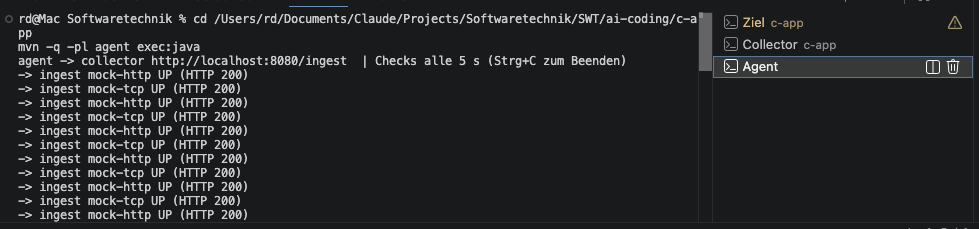
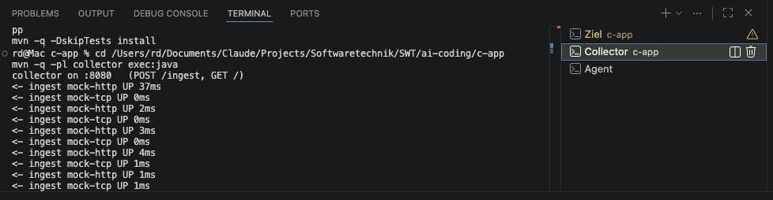
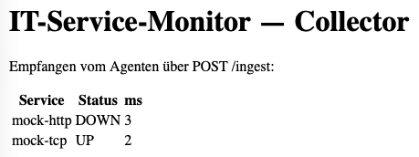

Teil C — Doku: die modulare, verteilte App
Ausführliche Erklärung des IT-Service-Monitors (Teil C) mit Grafiken
1 · Grundprinzip
Teil C ist verteilt im Sinne der Vorlesung: nicht ein Programm mit Frontend/Controller/Backend in einem Prozess, sondern drei eigenständige Programme (Prozesse / JVMs), die nur über HTTP miteinander reden — kein gemeinsamer Speicher. Ein Prozess erledigt eine Aufgabe (Prüfen) und sendet die Daten an einen zweiten Prozess, der sie verarbeitet (speichern, alarmieren, anzeigen).
2 · Überblick: die drei Prozesse
flowchart LR
subgraph P2["agent · Prozess 2 (Produzent)"]
sched["scheduler + checker
prüft periodisch"]
client["IngestClient"]
end
subgraph P1["mock-service · Prozess 1 (Ziel)"]
mock["GET /health
Code setzbar"]
end
subgraph P3["collector · Prozess 3 (Verarbeiter)"]
ingest["POST /ingest
store + alerting"]
dash["GET /
Dashboard"]
end
browser(["Browser / Betreiber"])
sched -- "HTTP GET /health" --> mock
client -- "HTTP POST /ingest
(StatusRecord)" --> ingest
browser -- "HTTP GET /" --> dash
| Prozess | Rolle | Port |
|---|---|---|
mock-service | überwachtes Ziel; /health mit setzbarem Code (Ausfall-Demo) | 8081 |
agent | Produzent — prüft alle 5 s, sendet jedes Ergebnis; speichert/bewertet selbst nichts | — |
collector | Verarbeiter — empfängt, speichert, alarmiert, zeigt Dashboard | 8080 |
3 · Die acht Module (5 Bibliotheken + 3 Prozesse)
| Modul | Art | Verantwortung |
|---|---|---|
checker | Lib | Prüf-Strategien HTTP/TCP/DNS + StatusEvaluator (Code+Zeit → Status) |
store | Lib | StatusRecord, HistoryStore, IngestCodec (Wire-Format) |
alerting | Lib | Ausfall-Entprellung — genau ein Alarm pro Ausfall |
scheduler | Lib | Takt; führt Checks aus, übergibt Ergebnis an einen ResultSink |
dashboard-ui | Lib | StatusRenderer — erzeugt das Dashboard-HTML |
mock-service | Prozess | steuerbares Test-Target (mit Cline gebaut) |
agent | Prozess | prüft + sendet (IngestClient) |
collector | Prozess | empfängt (POST /ingest) + Dashboard (GET /) |
Modul-Abhängigkeiten (Pfeil = „hängt ab von"):
flowchart TD
store --> checker
alerting --> checker
scheduler --> checker
scheduler --> store
dashboard["dashboard-ui"] --> store
agent --> scheduler
agent --> store
collector --> store
collector --> alerting
collector --> dashboard
mock["mock-service"]
4 · Datenfluss: ein Check von Anfang bis Ende
sequenceDiagram
participant S as Scheduler (agent)
participant H as HttpCheck (agent)
participant M as mock-service
participant I as IngestClient (agent)
participant C as CollectorServer (collector)
participant ST as HistoryStore
participant A as AlertingService
actor B as Browser
S->>H: run(target)
H->>M: HTTP GET /health
M-->>H: Statuscode + Zeit
H-->>S: CheckResult (via StatusEvaluator)
S->>I: accept(StatusRecord)
I->>C: HTTP POST /ingest (IngestCodec.encode)
C->>ST: append(record)
C->>A: tick(service, status)
C-->>I: 200 OK
B->>C: HTTP GET /
C->>ST: latestPerService()
C-->>B: Dashboard-HTML (StatusRenderer)
5 · Klassenüberblick (Kernklassen)
classDiagram
class Check {
<<interface>>
+run(target) CheckResult
}
class ResultSink {
<<interface>>
+accept(record)
}
class HistoryStore {
<<interface>>
}
Check <|.. HttpCheck
HttpCheck --> StatusEvaluator
Scheduler --> ResultSink
ResultSink <|.. IngestClient
IngestClient --> IngestCodec
CollectorServer --> HistoryStore
CollectorServer --> AlertingService
CollectorServer --> IngestCodec
HistoryStore <|.. InMemoryHistoryStore
Vollständiges Klassendiagramm als PlantUML liegt privat vor; hier die prüfungsrelevanten Kernbeziehungen.
6 · Die zentrale Naht: ResultSink
Der scheduler kennt weder store noch Netzwerk — er übergibt
jedes Ergebnis nur an das ResultSink-Interface. Lokal wäre
der Sink „in den Store schreiben"; verteilt ist er der
IngestClient, der per HTTP sendet. Dieselbe Naht macht denselben Code lokal
oder verteilt lauffähig — Verteilung ist Konfiguration, kein Umbau.
// scheduler übergibt nur an das Interface — weiß nicht, was passiert:
sink.accept(new StatusRecord(name, status, ms, Instant.now()));
// im agent IST der Sink der IngestClient → sendet per HTTP:
class IngestClient implements ResultSink {
public void accept(StatusRecord r) { /* HTTP POST /ingest */ }
}7 · Alerting-Zustandslogik (pro Dienst)
stateDiagram-v2
[*] --> OK
OK --> Beobachtet: erster DOWN (downSince = jetzt)
Beobachtet --> Alarmiert: DOWN länger als Fenster → genau 1 Alarm
Alarmiert --> Alarmiert: weiter DOWN (kein zweiter Alarm)
Beobachtet --> OK: Erholung (reset)
Alarmiert --> OK: Erholung (reset)
Die Zeit kommt über eine injizierte Clock (im Test eine FakeClock →
deterministische „Zeitreise"). Genau hier steckte der Fehler, den ein Test fand
(Alarm bei Null-Fenster) — Details in
TESTLAUF.md.
8 · Nachweis: die drei Prozesse live


-> ingest … und collector <- ingest ….
GET /) mit den über POST /ingest empfangenen Daten.Warum nur Screenshots und nicht live auf dieser Seite? GitHub Pages ist statisches Hosting und kann keine laufenden Server-Prozesse ausführen — das verteilte System braucht drei laufende JVMs. (Teil A und B sind rein browserseitig und deshalb live.)
9 · Bauen & verteilt starten
cd ai-coding/c-app
mvn -B test # baut alle Module, 13 Tests grün
mvn -q -DskipTests install # einmal installieren
# drei Terminals:
mvn -q -pl mock-service exec:java # Prozess 1 (:8081)
mvn -q -pl collector exec:java # Prozess 3 (:8080)
mvn -q -pl agent exec:java # Prozess 2
# Ausfall simulieren:
curl "http://localhost:8081/admin?code=500" # → DOWN → nach ~15 s ALERT im collector10 · Prinzipien, Tests, Grenzen
| Thema | Kurz |
|---|---|
| Muster | Strategy (Check, AlertSink), Dependency Injection (Clock, ResultSink, HistoryStore), reiner Kern vs. I/O |
| Tests | 13 grün; ein Test fand einen echten Bug (rot→grün) — TESTLAUF.md |
| Bewusste Grenzen | In-Memory-Store (Daten weg bei Neustart), kein Auth/Retry auf /ingest — KISS, dokumentiert |
| Werkzeuge | Claude Code (CLI) für 7 Module; Cline (IDE-Plugin) für mock-service |